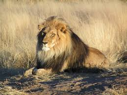
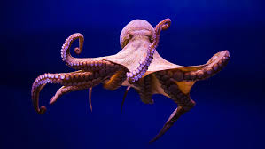
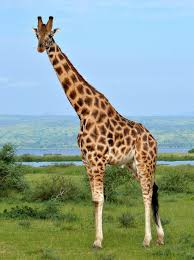

Лев

Лев — це друга за величиною кішка після тигра. Грива самця служить показником його здоров'я та генетичної якості.
Восьминіг

Восьминіг є одним із найрозумніших безхребетних тварин. Восьминіг має три серця і блакитну кров.
Жирафа

Жирафа — найвища наземна тварина. Попри свою надзвичайну довжину, шия жирафи має ту ж кількість шийних хребців, що й у людини — сім